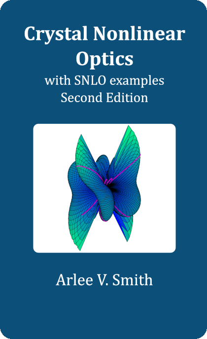
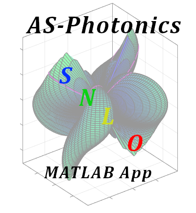

Crystal Nonlinear Optics: with SNLO examples (second edition) teaches advanced crystal nonlinear optics from the ground up, so you can get the most out of Qmix.
Poling period, d_eff, GVM, GDD, temperature acceptance, and tuning for periodically poled crystals

mlSNLO is a versatile MATLAB App for nonlinear optics. Write batch scripts to automate calculations and explore design spaces.